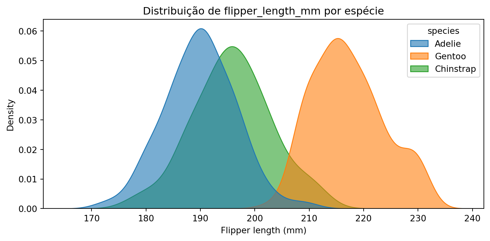
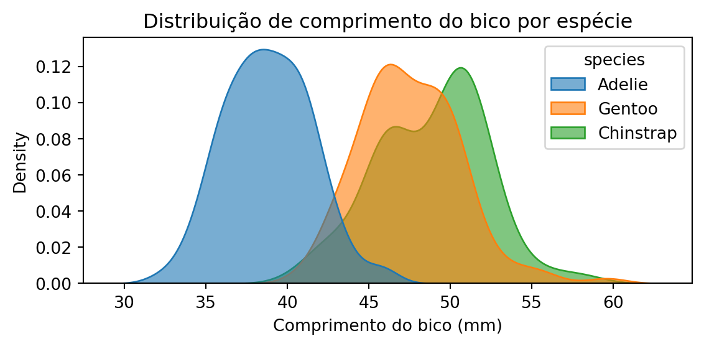
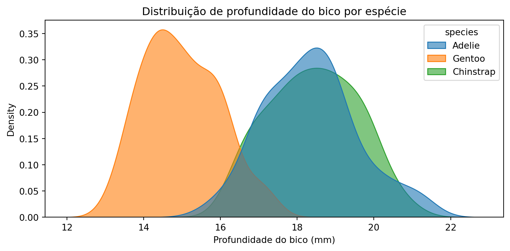
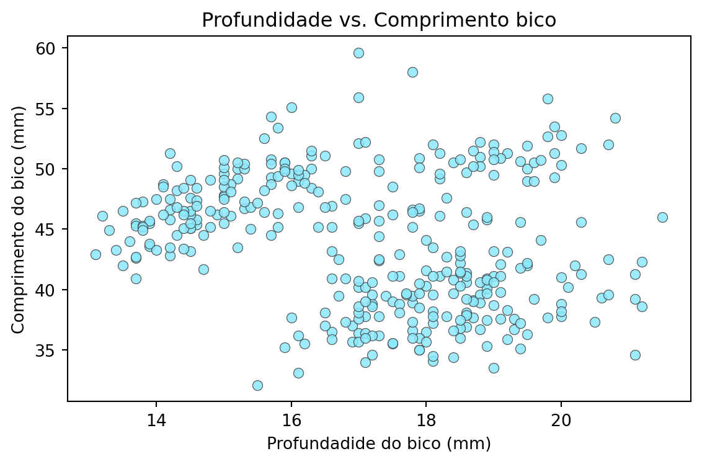
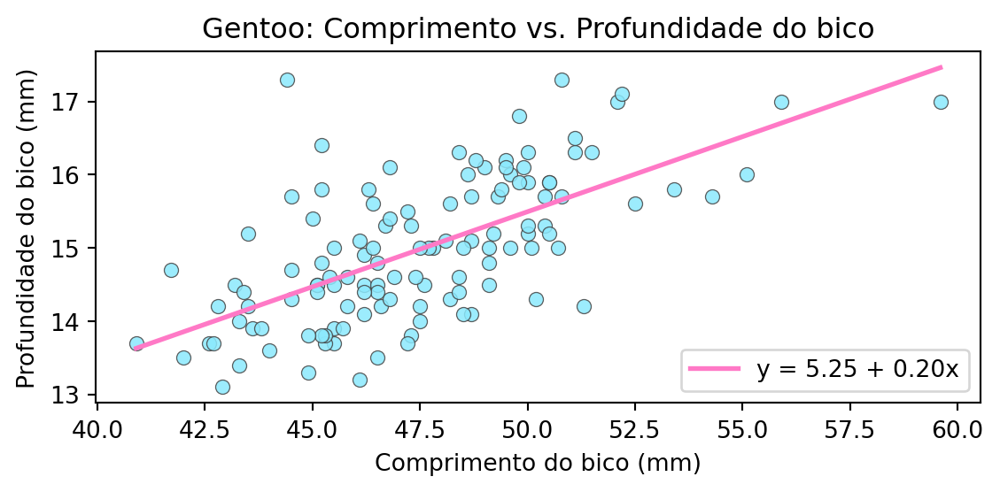
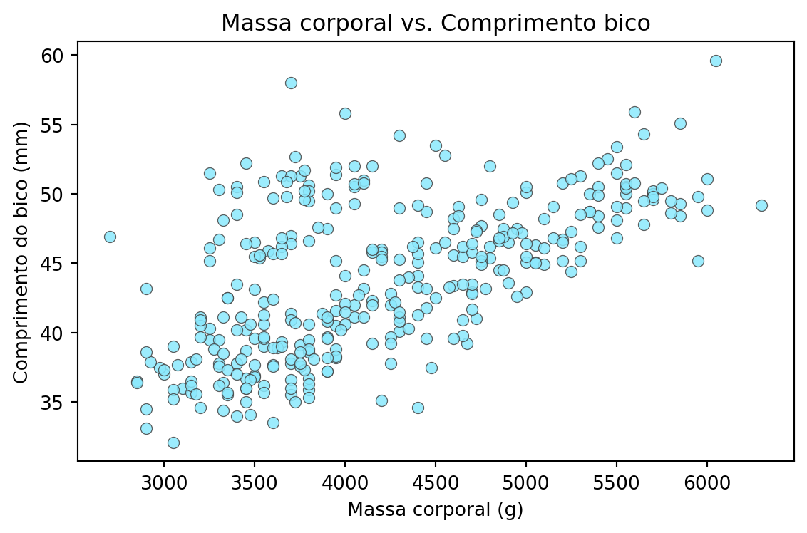
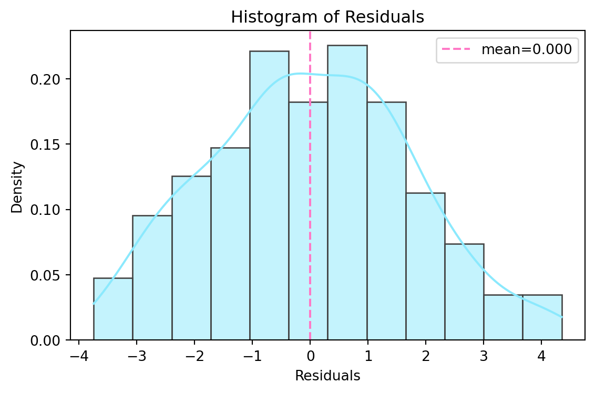
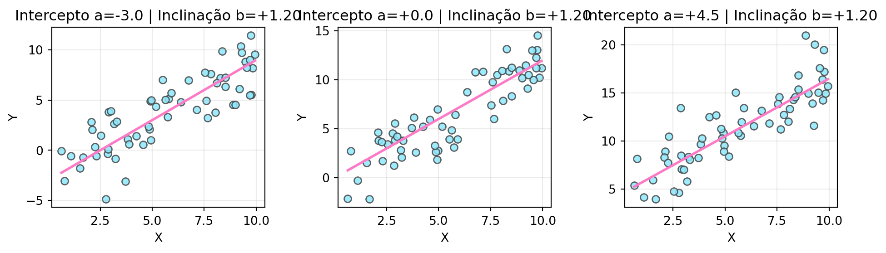
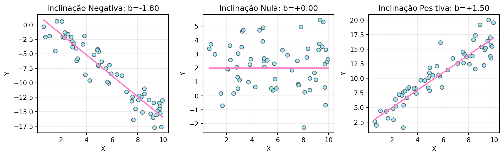

Dia 04 - Regressão e Correlação
Introdução à Estatística com Python
2025-10-19
Análises de associação
Podemos calcular associações entre:
Variáveis qualitativas
Variáveis quantitativas
Variáveis qualitativas e quantitativas
Tabelas de contingência
Tabelas de dupla entrada usadas para apresentar dados de variáveis qualitativas.
Devem apresentar os totais
Não devem representar amostras muito pequenas
Tabelas de contingência com Python
Scipy é uma das bibliotecas para realização de análises estatísticas
Inclui a função
chia2_contingency
Tabelas de contingência com Python
Exemplo simples (fumantes/não fumantes, homens/mulheres)
Tabelas de contingência com frequências absoluta
Tabelas de contingência com frequências absoluta
Tabelas de contingência com frequências relativa
Calculando associações entre variáveis qualitativas
Descrever a associação entre as variáveis - conhecer o grau de dependência entre elas.
Cálculo de coeficientes de associação ou correlação
Valores de Qui-quadrado de Pearson
Teste de qui-quadrado de Pearson
Definição de grupos
Definição das hipóteses
Definição do nível de significância
Cálculo da estatística de teste
Rejeição de hipótese nula em valores de qui-quadrado igual ou maior que o da tabela, para determinado nível de significância e graus de liberdade.
teste qui-quadrado de independência
Qui-quadrado=1.600, p-valor=0.206, graus de liberdade=1
Contagens esperadas:
Smokes No Yes
Gender
F 2.5 2.5
M 2.5 2.5Tabela referência qui-quadrado
Tabela referência qui-quadrado
Simulação: caso significativo vs não significativo (Qui-quadrado)
def run_chi2(obs, label):
tab = pd.DataFrame(obs, index=["Grupo 1", "Grupo 2"], columns=["Categoria A", "Categoria B"])
chi2, p, dof, expected = chi2_contingency(tab)
print(f"\n== {label} ==")
print("Tabela observada:")
print(tab)
print(f"\nQui-quadrado={chi2:.3f}, p-valor={p:.4f}, df={dof}")
print("Contagens esperadas:")
print(pd.DataFrame(expected, index=tab.index, columns=tab.columns))Simulação: caso significativo vs não significativo (Qui-quadrado)
== Associação Significativa (esperado: p < 0.05) ==
Tabela observada:
Categoria A Categoria B
Grupo 1 30 5
Grupo 2 5 30
Qui-quadrado=32.914, p-valor=0.0000, df=1
Contagens esperadas:
Categoria A Categoria B
Grupo 1 17.5 17.5
Grupo 2 17.5 17.5Simulação: caso significativo vs não significativo (Qui-quadrado)
== Associação Não Significativa (esperado: p >= 0.05) ==
Tabela observada:
Categoria A Categoria B
Grupo 1 20 15
Grupo 2 18 17
Qui-quadrado=0.058, p-valor=0.8104, df=1
Contagens esperadas:
Categoria A Categoria B
Grupo 1 19.0 16.0
Grupo 2 19.0 16.0Coeficientes de associação
Há pelo menos dois coeficientes utilizados para quantificar a associação entre variáveis qualitativas:
- Coeficiente fi — φ (phi)
- Coeficiente gama — γ (gama)
Quantificando associações
Quantificando associações
Quantificando associações
for label, obs in tables.items():
tab = pd.DataFrame(obs, index=["Grupo 1", "Grupo 2"], columns=["Cat A", "Cat B"])
chi2, p, dof, expected = chi2_contingency(tab)
n = tab.values.sum()
phi = phi_2x2(obs)
phi_from_chi2 = (chi2 / n) ** 0.5
print(f"\n== {label} ==")
print(tab)
print(f"chi2={chi2:.3f}, p={p:.4f}, n={n}, phi={phi:.3f}, phi_from_chi2={phi_from_chi2:.3f}")
== Forte ==
Cat A Cat B
Grupo 1 45 5
Grupo 2 4 46
chi2=64.026, p=0.0000, n=100, phi=0.820, phi_from_chi2=0.800
== Moderada ==
Cat A Cat B
Grupo 1 30 20
Grupo 2 18 22
chi2=1.451, p=0.2283, n=90, phi=0.149, phi_from_chi2=0.127
== Fraca ==
Cat A Cat B
Grupo 1 20 17
Grupo 2 16 19
chi2=0.222, p=0.6372, n=72, phi=0.083, phi_from_chi2=0.056Análise de correlação
Se duas variáveis têm valores que tendem a variar conjuntamente, dizemos que há correlação entre elas.
Diagrama de dispersão (scatterplot)
Existe correlação quando a nuvem de pontos está disposta na forma de uma elipse.
A correlação é positiva quando X cresce e, em média, Y também cresce;
A correlação é negativa quando X cresce e, em média, Y decresce;
Exemplo: Diagrama de Dispersão
Atenção
No dia a dia, não faz sentido calcular correlação entre X e Y se Y tiver sido criada em função de X.
Os código Python que geram vetores de X e Y são apenas exemplificativos, para visualização e compreensão de conceitos.
Força da correlação e o diagrama de dispersão
Correlação forte forma uma elipse fechada em torno de uma reta
Correlação fraca forma uma elipse arredondada
A correlação nula é indicada por pontos dispersos
Correlação fraca
Correlação linear e não linear
Correlação linear: nuvem de pontos em torno de uma reta
Correlação não linear: nuvem de pontos em torno de uma curva
Correlação não linear
plt.figure(figsize=(6,4))
sns.scatterplot(data=df_nl, x="X", y="Y", color="#8be9fd", edgecolor="#444", alpha=0.85)
# Curva média (suavização local)
sns.regplot(data=df_nl, x="X", y="Y", scatter=False, lowess=True, color="#ff79c6")
plt.title("Correlação Não Linear: Y ≈ sin(X)")
plt.tight_layout()
plt.show()Pressupostos para o cálculo de coeficiente de correlação
Há unidades da amostra para X e para Y
Unidades foram selecionadas ao acaso e/ou são representativas de uma população
Variáveis X e Y são independentes
Cálculo de coeficiente de correlação
Uma das formas de calcular a correlação linear entre duas variáveis é através do coeficiente de correlação de Pearson (r).
Valor de r pode variar entre -1 e 1
r > 0: correlação positiva
r = 0: correlação é nula
r < 0: correlação é negativa
Calculando coeficiente de correlação Pearson em Python
Calculando coeficiente de correlação Spearman
Dispersão para correlações com diferentes forças
np.random.seed(2025)
def simulate_with_corr(n, rho):
x = np.random.normal(size=n)
e = np.random.normal(size=n)
y = rho * x + np.sqrt(1 - rho**2) * e
return pd.DataFrame({"X": x, "Y": y})
rhos = [0.25, 0.50, 0.75, 0.99]
dfs = {rho: simulate_with_corr(500, rho) for rho in rhos}
corrs = {rho: dfs[rho]["X"].corr(dfs[rho]["Y"]) for rho in rhos}Dispersão para correlações com diferentes forças
fig, axes = plt.subplots(2, 2, figsize=(7, 4))
axes = axes.flatten()
for ax, rho in zip(axes, rhos):
sns.scatterplot(data=dfs[rho], x="X", y="Y", color="#8be9fd", edgecolor="#444", alpha=0.8, ax=ax)
sns.regplot(data=dfs[rho], x="X", y="Y", scatter=False, color="#ff79c6", ax=ax)
ax.set_title(f"Alvo r={rho:.2f} | Pearson≈{corrs[rho]:.2f}")
plt.tight_layout()
plt.show()Análises de associação e correlação com o dataset dos pinguins
Dataset pinguins
| species | island | bill_length_mm | bill_depth_mm | flipper_length_mm | body_mass_g | sex | year | |
|---|---|---|---|---|---|---|---|---|
| 0 | Adelie | Torgersen | 39.1 | 18.7 | 181.0 | 3750.0 | male | 2007 |
| 1 | Adelie | Torgersen | 39.5 | 17.4 | 186.0 | 3800.0 | female | 2007 |
| 2 | Adelie | Torgersen | 40.3 | 18.0 | 195.0 | 3250.0 | female | 2007 |
| 3 | Adelie | Torgersen | NaN | NaN | NaN | NaN | NaN | 2007 |
| 4 | Adelie | Torgersen | 36.7 | 19.3 | 193.0 | 3450.0 | female | 2007 |
Número de variáveis:
Index(['species', 'island', 'bill_length_mm', 'bill_depth_mm',
'flipper_length_mm', 'body_mass_g', 'sex', 'year'],
dtype='object')
Dimensões do dataframe:
(344, 8)
Tipo de dados:
species object
island object
bill_length_mm float64
bill_depth_mm float64
flipper_length_mm float64
body_mass_g float64
sex object
year int64
dtype: objectDataset pinguins
Dataset pinguins - variáveis categóricas
Counts (including NaN):
species:
species
Adelie 152
Gentoo 124
Chinstrap 68
island:
island
Biscoe 168
Dream 124
Torgersen 52
sex:
sex
male 168
female 165
NaN 11Counts of species × sex × island:
island Biscoe Dream Torgersen
species sex
Adelie female 22 27 24
male 22 28 23
missing 0 1 5
Chinstrap female 0 34 0
male 0 34 0
Gentoo female 58 0 0
male 61 0 0
missing 5 0 0Dataset pinguins - coletas ao longo de três anos
| species | Adelie | Chinstrap | Gentoo |
|---|---|---|---|
| year | |||
| 2007 | 50 | 26 | 34 |
| 2008 | 50 | 18 | 46 |
| 2009 | 52 | 24 | 44 |
Dataset pinguins - coletas ao longo de três anos
Dataset pinguins - coletas ao longo de três anos
Dataset pinguins - variáveis numéricas
- Resumo numérico das colunas numéricas com float:
Resumo numérico (apenas float64):
bill_length_mm bill_depth_mm flipper_length_mm body_mass_g
count 342.000 342.000 342.000 342.000
mean 43.922 17.151 200.915 4201.754
std 5.460 1.975 14.062 801.955
min 32.100 13.100 172.000 2700.000
25% 39.225 15.600 190.000 3550.000
50% 44.450 17.300 197.000 4050.000
75% 48.500 18.700 213.000 4750.000
max 59.600 21.500 231.000 6300.000Dataset pinguins - resumindo estatísticas dos pinguins
- Recuperando estatísticas para cada característica de pinguins:
print("\nEstatísticas (média e desvio padrão) por espécie:")
summary_species_traits = penguins[['species', 'bill_length_mm', 'bill_depth_mm',
'flipper_length_mm', 'body_mass_g']].groupby('species')[['bill_length_mm', 'bill_depth_mm',
'flipper_length_mm', 'body_mass_g']].describe().round(3)
print(summary_species_traits.head())
Estatísticas (média e desvio padrão) por espécie:
bill_length_mm \
count mean std min 25% 50% 75% max
species
Adelie 151.0 38.791 2.663 32.1 36.75 38.80 40.750 46.0
Chinstrap 68.0 48.834 3.339 40.9 46.35 49.55 51.075 58.0
Gentoo 123.0 47.505 3.082 40.9 45.30 47.30 49.550 59.6
bill_depth_mm ... flipper_length_mm body_mass_g \
count mean ... 75% max count
species ...
Adelie 151.0 18.346 ... 195.0 210.0 151.0
Chinstrap 68.0 18.421 ... 201.0 212.0 68.0
Gentoo 123.0 14.982 ... 221.0 231.0 123.0
mean std min 25% 50% 75% max
species
Adelie 3700.662 458.566 2850.0 3350.0 3700.0 4000.0 4775.0
Chinstrap 3733.088 384.335 2700.0 3487.5 3700.0 3950.0 4800.0
Gentoo 5076.016 504.116 3950.0 4700.0 5000.0 5500.0 6300.0
[3 rows x 32 columns]Dataset pinguins - resumindo estatísticas dos pinguins
Estatísticas de flipper length (mm) por espécie
count mean std min 25% 50% 75% max
species
Adelie 151.0 189.954 6.539 172.0 186.0 190.0 195.0 210.0
Chinstrap 68.0 195.824 7.132 178.0 191.0 196.0 201.0 212.0
Gentoo 123.0 217.187 6.485 203.0 212.0 216.0 221.0 231.0
Apenas médias de flipper length
species
Adelie 189.954
Chinstrap 195.824
Gentoo 217.187
Name: (flipper_length_mm, mean), dtype: float64Dataset pinguins - estatísticas dos flipper
plt.figure(figsize=(8,4))
sns.kdeplot(
data=penguins.dropna(subset=['flipper_length_mm','species']),
x='flipper_length_mm', hue='species', fill=True, common_norm=False,
alpha=0.6
)
plt.title('Distribuição de flipper_length_mm por espécie')
plt.xlabel('Flipper length (mm)')
plt.tight_layout()
plt.show()
Dataset pinguins - Comprimento dos bicos
- O caderno “Brief Analysis of Adelie Penguins” de Christopher Taylor tem uma imagem mostrando depth e length.
plt.figure(figsize=(6,3))
sns.kdeplot(
data=penguins.dropna(subset=['bill_length_mm','species']),
x='bill_length_mm', hue='species', fill=True, common_norm=False,
alpha=0.6
)
plt.title('Distribuição de comprimento do bico por espécie')
plt.xlabel('Comprimento do bico (mm)')
plt.tight_layout()
plt.show()
Dataset pinguins - Profundidade dos bicos
plt.figure(figsize=(8,4))
sns.kdeplot(
data=penguins.dropna(subset=['bill_depth_mm','species']),
x='bill_depth_mm', hue='species', fill=True, common_norm=False,
alpha=0.6
)
plt.title('Distribuição de profundidade do bico por espécie')
plt.xlabel('Profundidade do bico (mm)')
plt.tight_layout()
plt.show()
Dataset pinguins - estatísticas de massa corporal
Perguntas
As proporções de sexo coletadas para as espécies se mantêm ao longo dos anos?
Existe associação entre ilha e certas características dos pinguins? (Adelie é a única espécie distribuída nas três ilhas)
Há associação entre sexo e as ilha? (Adelie é a única espécie distribuída nas três ilhas)
Existe associação entre tamanho de bico e espécie?
Existe correlação entre tamanho e/ou profundidade do bico, flipper e massa corporal em uma ou mais espécies?
As correlações são significativas independente do sexo do pinguin?
Tabelas de contingência - espécies e ilhas
Apenas Adelie é observada nas três ilhas.
Não vale a pena testar casos óbvios, respondidos na análise exploratória. ??
Tabelas de contingência - ilhas e sexo (Adelie)
Tabelas de contingência - ilhas e sexo (Adelie)
Tabela de contingência:
sex female male
island
Biscoe 22 22
Dream 27 28
Torgersen 24 23Teste Qui-quadrado de Pearson - ilhas e sexo (Adelie)
chi2_c, p_c, dof_c, expected_c = chi2_contingency(adelie_tab_freq)
print("Contingency table (island × sex):")
print(adelie_tab_freq)
print(f"\nChi-square test of independence -> chi2={chi2_c:.3f}, p={p_c:.4f}, df={dof_c}")
print("Expected counts:")
print(pd.DataFrame(expected_c, index=adelie_tab_freq.index, columns=adelie_tab_freq.columns))Contingency table (island × sex):
sex female male
island
Biscoe 22 22
Dream 27 28
Torgersen 24 23
Chi-square test of independence -> chi2=0.039, p=0.9805, df=2
Expected counts:
sex female male
island
Biscoe 22.0 22.0
Dream 27.5 27.5
Torgersen 23.5 23.5Teste Qui-quadrado de Pearson - ilhas e sexo (Adelie)
from scipy.stats import chi2
alpha = 0.05
chi2_crit = chi2.ppf(1 - alpha, dof_c)
print(f"Chi2 estatística = {chi2_c:.3f}, p-valor = {p_c:.4f}, df = {dof_c}, α = {alpha}")
print(f"Valor crítico χ²(1-α, df) = {chi2_crit:.3f}")
if p_c < alpha or chi2_c >= chi2_crit:
print("Resultado significativo: rejeita H0 -> há evidência de associação entre ilha e sexo (Adelie).")
else:
print("Resultado não significativo: falha em rejeitar H0 -> sem evidência de associação entre ilha e sexo (Adelie).")Chi2 estatística = 0.039, p-valor = 0.9805, df = 2, α = 0.05
Valor crítico χ²(1-α, df) = 5.991
Resultado não significativo: falha em rejeitar H0 -> sem evidência de associação entre ilha e sexo (Adelie).Tabelas de contingência (freq. relativa) - ilhas e sexo (Adelie)
Calculando frequencias relativas pinguins
from scipy.stats import chisquare, chi2_contingency
# islands observed for Adelie
islands = sorted(adelie_df['island'].dropna().unique())
# 1) Goodness-of-fit: are counts equal across the three islands?
obs_all = adelie_df['island'].value_counts().reindex(islands, fill_value=0).values
exp_all = np.full_like(obs_all, obs_all.sum() / obs_all.size, dtype=float)
chi2_all, p_all = chisquare(f_obs=obs_all, f_exp=exp_all)
print("All Adelie (counts by island):", dict(zip(islands, obs_all)))
print(f"Goodness-of-fit -> chi2={chi2_all:.3f}, p={p_all:.4f}, df={len(obs_all)-1}\n")
# 2) Same test separately for each sex
for sex in adelie_df['sex'].dropna().unique():
obs_sex = adelie_df[adelie_df['sex'] == sex]['island'].value_counts().reindex(islands, fill_value=0).values
if obs_sex.sum() == 0:
continue
exp_sex = np.full_like(obs_sex, obs_sex.sum() / obs_sex.size, dtype=float)
chi2_s, p_s = chisquare(f_obs=obs_sex, f_exp=exp_sex)
print(f"Sex={sex}: counts={dict(zip(islands, obs_sex))}")
print(f" Goodness-of-fit -> chi2={chi2_s:.3f}, p={p_s:.4f}, df={len(obs_sex)-1}\n")
# 3) Contingency test (island vs sex) as alternative (tests independence)
tab = pd.crosstab(adelie_df['island'], adelie_df['sex'])
chi2_c, p_c, dof_c, expected_c = chi2_contingency(tab)
print("Contingency table (island × sex):")
print(tab)
print(f"\nChi-square test of independence -> chi2={chi2_c:.3f}, p={p_c:.4f}, df={dof_c}")
print("Expected counts:")
print(pd.DataFrame(expected_c, index=tab.index, columns=tab.columns))All Adelie (counts by island): {'Biscoe': np.int64(44), 'Dream': np.int64(56), 'Torgersen': np.int64(52)}
Goodness-of-fit -> chi2=1.474, p=0.4786, df=2
Sex=male: counts={'Biscoe': np.int64(22), 'Dream': np.int64(28), 'Torgersen': np.int64(23)}
Goodness-of-fit -> chi2=0.849, p=0.6540, df=2
Sex=female: counts={'Biscoe': np.int64(22), 'Dream': np.int64(27), 'Torgersen': np.int64(24)}
Goodness-of-fit -> chi2=0.521, p=0.7708, df=2
Contingency table (island × sex):
sex female male
island
Biscoe 22 22
Dream 27 28
Torgersen 24 23
Chi-square test of independence -> chi2=0.039, p=0.9805, df=2
Expected counts:
sex female male
island
Biscoe 22.0 22.0
Dream 27.5 27.5
Torgersen 23.5 23.5Análise de regressão
A análise de regressão permite examinar o efeito de uma variável explicativa (ou mais de uma) sobre uma variável resposta.
- Vamos analisar regressão linear entre duas variáveis
Equação da reta
Equação da reta (modelo linear simples):
\[ Y_i = a + b\,X_i \]
- α (alpha) é o intercepto (termo constante)
- β (beta) é o coeficiente angular (inclinação)
Valores de coeficientes
Valores de coeficientes lineares (intercepto)
intercepts = [-3.0, 0.0, 4.5]
slope = 1.2
noise_scale = 1.8
fig, axes = plt.subplots(1, len(intercepts), figsize=(10, 3))
x_line = np.linspace(x.min(), x.max(), 200)
for ax, a in zip(axes, intercepts):
y = a + slope * x + rng.normal(0, noise_scale, size=n)
ax.scatter(x, y, c="#8be9fd", edgecolors="#444", alpha=0.85)
ax.plot(x_line, a + slope * x_line, color="#ff79c6", linewidth=2)
ax.set_title(f"Intercepto a={a:+.1f} | Inclinação b={slope:+.2f}")
ax.set_xlabel("X")
ax.set_ylabel("Y")
ax.grid(alpha=0.25)
plt.tight_layout()
plt.show()
Valores de coeficientes angulares
fig, axes = plt.subplots(1, 3, figsize=(11, 3.5))
x_line = np.linspace(x.min(), x.max(), 200)
for ax, (b, label) in zip(axes, slopes):
y = intercept + b * x + rng.normal(0, noise_scale, size=n)
ax.scatter(x, y, c="#8be9fd", edgecolors="#444", alpha=0.85)
ax.plot(x_line, intercept + b * x_line, color="#ff79c6", linewidth=2)
ax.set_title(f"Inclinação {label}: b={b:+.2f}")
ax.set_xlabel("X")
ax.set_ylabel("Y")
ax.grid(alpha=0.25)
plt.tight_layout()
plt.show()
Regressão linear simples
Vamos ajustar uma regressão linear simples a um conjunto de dados.
- Linear: reta
- Simples: apenas uma variável explicativa
Obtenção do coeficiente angular
\[ b = \frac{\sum_{i=1}^n (x_i - \bar{x})(y_i - \bar{y})}{\sum_{i=1}^n (x_i - \bar{x})^2} \]
Obtenção do coeficiente linear (intercepto)
\[ a = \bar{y} - b\,\bar{x} \]
Pontos criados a partir dos coeficientes
Pontos criados a partir dos coeficientes
Condições para ajuste da regressão linear simples
Variáveis devem ser contínuas
Relação entre elas deve ser linear
Observações devem ser independentes
Não trataremos de casos envolvendo variáveis discretas (embora esta análise de regressão seja possível)
Escolha de variáveis explicativas
Extrapolação
Análises de regressão linear com o dataset dos pinguins
Dataset pinguins
| species | island | bill_length_mm | bill_depth_mm | flipper_length_mm | body_mass_g | sex | year | |
|---|---|---|---|---|---|---|---|---|
| 0 | Adelie | Torgersen | 39.1 | 18.7 | 181.0 | 3750.0 | male | 2007 |
| 1 | Adelie | Torgersen | 39.5 | 17.4 | 186.0 | 3800.0 | female | 2007 |
| 2 | Adelie | Torgersen | 40.3 | 18.0 | 195.0 | 3250.0 | female | 2007 |
| 3 | Adelie | Torgersen | NaN | NaN | NaN | NaN | NaN | 2007 |
| 4 | Adelie | Torgersen | 36.7 | 19.3 | 193.0 | 3450.0 | female | 2007 |
Objetivos das análises com o dataset dos pinguins
Construir um modelo de regressão linear
Avaliar a qualidade do modelo
Verificar se as premissas da análise são cumpridas
Fazer predições
Dataset pinguins
| species | bill_length_mm | bill_depth_mm | flipper_length_mm | body_mass_g | |
|---|---|---|---|---|---|
| 0 | Adelie | 39.1 | 18.7 | 181.0 | 3750.0 |
| 1 | Adelie | 39.5 | 17.4 | 186.0 | 3800.0 |
| 2 | Adelie | 40.3 | 18.0 | 195.0 | 3250.0 |
| 3 | Adelie | NaN | NaN | NaN | NaN |
| 4 | Adelie | 36.7 | 19.3 | 193.0 | 3450.0 |
Dados faltantes no dataset de pinguins
- Não é possível fazer a análise com dados faltantes! (sim, o dia a dia é cheio de exceções rs veremos isso novamente amanhã)
Dimensões do dataframe depois:
(344, 5)
Dados faltantes por coluna:
species 0
bill_length_mm 2
bill_depth_mm 2
flipper_length_mm 2
body_mass_g 2
dtype: int64
Dimensões do dataframe depois:
(342, 5)Dataset pinguins - dados bico
df_plot = penguins_subset.dropna(subset=['bill_depth_mm', 'bill_length_mm'])
plt.figure(figsize=(6,4))
sns.scatterplot(data=df_plot, x='bill_depth_mm', y='bill_length_mm',
color='#8be9fd', edgecolor='#444', alpha=0.85)
plt.xlabel('Profundadide do bico (mm)')
plt.ylabel('Comprimento do bico (mm)')
plt.title('Profundidade vs. Comprimento bico')
plt.tight_layout()
plt.show()
Dataset pinguins - bico ou nadadeira vs. massa corporal
df_plot = penguins_subset.dropna(subset=['body_mass_g', 'bill_depth_mm'])
plt.figure(figsize=(6,4))
sns.scatterplot(data=df_plot, x='body_mass_g', y='bill_depth_mm',
color='#8be9fd', edgecolor='#444', alpha=0.85)
plt.xlabel('Massa corporal (g)')
plt.ylabel('Profundidade do bico (mm)')
plt.title('Massa corporal vs. Profundidade bico')
plt.tight_layout()
plt.show()
df_plot = penguins_subset.dropna(subset=['body_mass_g', 'bill_length_mm'])
plt.figure(figsize=(6,4))
sns.scatterplot(data=df_plot, x='body_mass_g', y='bill_length_mm',
color='#8be9fd', edgecolor='#444', alpha=0.85)
plt.xlabel('Massa corporal (g)')
plt.ylabel('Comprimento do bico (mm)')
plt.title('Massa corporal vs. Comprimento bico')
plt.tight_layout()
plt.show()
Criando o modelo linear
Avaliando o modelo linear
import statsmodels.api as sm
from statsmodels.stats.diagnostic import het_breuschpagan
# ensure same rows used for fitting
df_model = penguins_subset.dropna(subset=['body_mass_g', 'bill_depth_mm']).copy()
X = df_model[['body_mass_g']].values
y = df_model['bill_depth_mm'].values
# predictions and residuals
y_pred = lin_reg.predict(X).ravel()
resid = y - y_predAvaliando o modelo linear - Normalidade dos resíduos
plt.figure(figsize=(6,4))
sns.histplot(resid, kde=True, color="#8be9fd", edgecolor="#444", stat="density")
plt.axvline(np.mean(resid), color="#ff79c6", linestyle="--", linewidth=1.5, label=f"mean={resid.mean():.3f}")
plt.xlabel("Residuals")
plt.ylabel("Density")
plt.title("Histogram of Residuals")
plt.legend()
plt.tight_layout()
plt.show()
Avaliando o modelo linear

Avaliando o modelo linear
Avaliando o modelo linear
# Scale-Location (sqrt standardized residuals) plot
std_resid = resid / np.std(resid, ddof=1)
plt.figure(figsize=(6,4))
sns.scatterplot(x=y_pred, y=np.sqrt(np.abs(std_resid)), color='#8be9fd', edgecolor='#444', alpha=0.8)
plt.xlabel('Fitted values')
plt.ylabel('Sqrt(|Standardized residuals|)')
plt.title('Scale-Location')
plt.tight_layout()
plt.show()
Avaliando o modelo linear
Teste de heterocedasticidade (Breusch-Pagan)
Espera-se homocedasticidade na distribução de erros
Breusch-Pagan -> LM stat=1.365, p-value=0.2427; F stat=1.362, p-value=0.2440Uso de Inteligência Artificial
Material com exemplos criados com GitHub Copilot usando modelo(s):
GPT 5.0
Referências
Géron, A. Hands-On Machine Learning with Scikit-Learn, Keras & Tensorflow. Terceira Edição (capítulo 9). 2025.
Vieira, S. Introdução à Bioestatística. 2021.